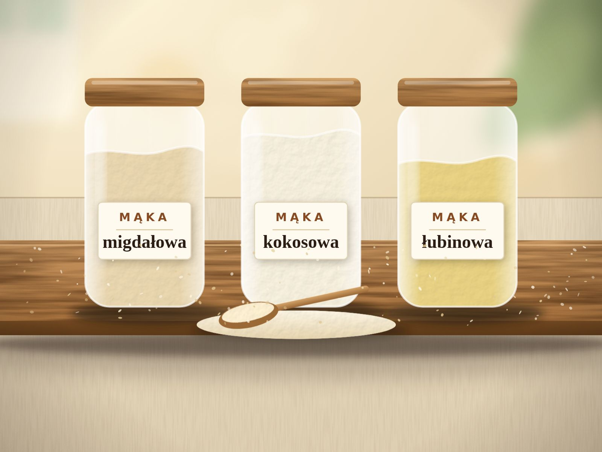

Mąki keto: migdałowa, kokosowa, łubinowa i babka płesznik. Czym się różnią?
Półka z mąkami keto potrafi przytłoczyć. Wyjaśniamy prosto, czym różni się mąka migdałowa, kokosowa, łubinowa i babka płesznik i jak je łączyć.

Pierwsza wizyta na „zdrowej” półce sklepowej potrafi przytłoczyć: migdałowa, kokosowa, łubinowa, lniana, babka płesznik… Każda wygląda podobnie, a w pieczeniu zachowuje się zupełnie inaczej. To właśnie dlatego tyle osób kończy z keto chlebem, który jest gumowy albo kruszy się w rękach. Dobra wiadomość: wystarczy poznać pięć składników, żeby przestać się w tym gubić.
W skrócie
- Mąka migdałowa to najbardziej uniwersalna baza, także dla początkujących.
- Mąka kokosowa jest bardzo chłonna. Używa się jej znacznie mniej i nie zamienia 1:1.
- Mąka łubinowa to dodatek do mieszanek, a nie samodzielna baza. Uwaga na alergeny.
- Babka płesznik nie jest mąką, tylko „klejem”, który nadaje chlebowi sprężystość.
- Zawsze waż składniki. Łyżki i szklanki przy mąkach keto łatwo mylą.
Najkrótsza ściągawka
| Składnik | Charakter | Do czego się sprawdza | Na co uważać |
|---|---|---|---|
| Mąka migdałowa | Delikatna, lekko orzechowa; daje miękką, wilgotną strukturę | Ciasta, spody do serników, bułki, baza chleba | Alergen (orzechy). Wypieki szybciej się rumienią |
| Mąka kokosowa | Sucha, zbita, lekko kokosowa; bardzo chłonna | Niewielki dodatek do mieszanek, naleśniki, ciasta | Nie zamieniaj 1:1. Potrzebuje więcej jajek lub płynu |
| Mąka łubinowa | Dużo białka i błonnika, lekko gorzkawy posmak | Dodatek do mąki migdałowej, np. w chlebie | Alergen (roślina strączkowa), możliwe reakcje krzyżowe |
| Babka płesznik (łuska) | Nie mąka, lecz środek wiążący; po zmieszaniu z wodą tworzy żel | Chleb i bułki: sprężystość, zastępuje część roli glutenu | Potrzebuje kilku minut na napęcznienie. Za dużo daje gumową strukturę |
| Mielone siemię lniane | Orzechowe, lekko ziemiste; wiąże masę, ciemni pieczywo | Chleb, bułki, panierki | Mielone szybko traci świeżość. Trzymaj w chłodzie |
| Białko pszenne (gluten) | Daje elastyczność zbliżoną do pszennej | Pieczywo „jak tradycyjne” | Zawiera gluten. Nie dla osób z celiakią |
Mąka migdałowa: baza większości przepisów
To najczęściej używana mąka keto i nie bez powodu. Jest delikatna, lekko orzechowa i daje wypiekom miękką, wilgotną strukturę, zbliżoną do ciasta maślanego. Świetnie nadaje się do ciast, bułek i spodów do serników, a w chlebie tworzy bazę, którą uzupełniają inne składniki.
Na półkach znajdziesz dwa rodzaje: jaśniejszą, z migdałów blanszowanych (pozbawionych skórki), oraz ciemniejszą, z migdałów w skórce. Jasna daje delikatniejszy smak i kolor, ciemniejsza – bardziej „chlebowy” wygląd. Warto też odróżnić ją od mielonych migdałów, które są grubsze i mogą dać mniej zwartą strukturę.
Dobrze wiedzieć: zawiera dużo tłuszczu, więc wypieki rumienią się szybciej niż z mąką pszenną. Jeśli wierzch ciemnieje, a środek jeszcze nie jest gotowy, przykryj go folią aluminiową.
Mąka kokosowa: mało, ale mocno
Mąka kokosowa jest sucha, a przy tym wyjątkowo chłonna: wchłania płyny jak gąbka. Dlatego w przepisach używa się jej znacznie mniej niż migdałowej, a ciasto wymaga dodatkowych jajek lub płynu.
Orientacyjnie zwykle zakłada się, że 100 g mąki migdałowej można zastąpić około 30–35 g mąki kokosowej, zwiększając jednocześnie ilość jajek lub płynu. Traktuj to wyłącznie jako punkt wyjścia do własnych prób, bo różne marki zachowują się odmiennie. Nigdy nie zamieniaj jej 1:1 – efekt będzie suchy i kruchy.
Mąka łubinowa: dodatek, nie baza
Powstaje z nasion łubinu, rośliny strączkowej. Jest bogata w białko i błonnik, a jej lekko gorzkawy posmak w pieczywie zwykle nie przeszkadza. Najlepiej sprawdza się jako uzupełnienie mąki migdałowej w chlebie, gdzie poprawia strukturę miękiszu.
Uwaga – alergen. Łubin jest jednym z alergenów oznaczanych na opakowaniach w Unii Europejskiej. Osoby uczulone na orzeszki ziemne lub inne rośliny strączkowe powinny zachować szczególną ostrożność, bo możliwe są reakcje krzyżowe. W razie wątpliwości zapytaj lekarza alergologa.
Babka płesznik: sekret sprężystości
To najważniejszy „pomocnik” w pieczywie keto, choć tak naprawdę wcale nie jest mąką. Łuski nasion babki po zmieszaniu z wodą tworzą żel, który w cieście zachowuje się trochę jak gluten: wiąże składniki i nadaje sprężystość. Bez niej chleb z samej mąki migdałowej często się kruszy.
W sklepach znajdziesz ją jako „babkę płesznik” lub „łuskę babki jajowatej”. To zbliżone produkty, które w przepisach zwykle stosuje się zamiennie. Pamiętaj o trzech zasadach:
- Daj jej czas. Po zmieszaniu z płynami ciasto powinno odstać kilka minut, aż babka napęcznieje i masa zgęstnieje.
- Nie przesadzaj z ilością. Za dużo babki to najczęstszy powód gumowego, galaretowatego miękiszu.
- Zadbaj o picie. Babka mocno wiąże wodę, dlatego wprowadzaj ją stopniowo i popijaj wodą. Przy problemach z jelitami skonsultuj jej stosowanie z lekarzem.
Jak zamieniać mąki i nie zepsuć przepisu
- Waż, nie odmierzaj łyżkami. Gram mąki kokosowej i gram migdałowej zajmują zupełnie inną objętość.
- Zmieniaj jedną rzecz naraz. Jeśli jednocześnie zmienisz mąkę i ilość jajek, nie dowiesz się, co zadziałało.
- Testuj na małej porcji. Mąki keto są drogie, a przepis trzeba czasem poprawić.
- Zapisuj wyniki. Krótka notatka (ile czego, jak długo, jaki efekt) oszczędzi Ci wielu prób.
Jeśli mimo to chleb wychodzi gumowy, zajrzyj do artykułu o najczęstszych błędach w pieczeniu keto chleba.
Jak przechowywać mąki keto
Mąki o dużej zawartości tłuszczu, takie jak migdałowa i mielone siemię lniane, z czasem mogą nabrać nieprzyjemnego, „jełczejącego” posmaku. Trzymaj je w szczelnym pojemniku, w chłodnym i ciemnym miejscu, a mielone siemię najlepiej w lodówce. Mąkę kokosową i babkę płesznik przechowuj w suchym miejscu, z dala od wilgoci.
Alergie i przeciwwskazania
- Migdały to orzechy, więc wykluczają je osoby uczulone na orzechy.
- Łubin może uczulać osoby z alergią na rośliny strączkowe.
- Białko pszenne zawiera gluten i nie jest dla osób z celiakią ani nadwrażliwością na gluten.
- Bogate w błonnik dodatki (babka płesznik, siemię) wprowadzaj stopniowo, zwłaszcza jeśli masz wrażliwy układ pokarmowy.
Najczęstsze pytania o mąki keto
Czym zastąpić mąkę migdałową?
Najczęściej stosuje się mąkę kokosową w znacznie mniejszej ilości (z dodatkiem jajek lub płynu) albo mielone nasiona, np. słonecznika lub dyni. Każda z tych zamian zmienia smak i strukturę, dlatego przepis trzeba przetestować od nowa.
Gdzie kupić mąkę migdałową i babkę płesznik?
W większych supermarketach (zwykle w dziale zdrowej żywności), w sklepach ze zdrową żywnością i w sklepach internetowych. Porównuj skład: dobra mąka migdałowa powinna zawierać wyłącznie migdały.
Czy mąka migdałowa to to samo co mielone migdały?
Nie do końca. Mąka migdałowa jest zwykle drobniej zmielona i często pochodzi z migdałów blanszowanych. Mielone migdały są grubsze i mogą dać mniej zwartą strukturę wypieku.
Czy muszę używać babki płesznik?
Nie zawsze, ale w chlebach i bułkach bardzo pomaga. Bez niej ciasto z mąki migdałowej bywa kruche. Część przepisów zastępuje ją mielonym siemieniem lnianym lub większą ilością jajek.